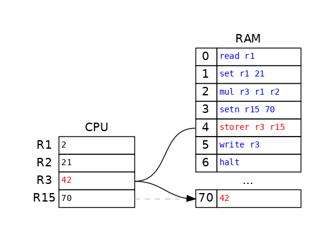
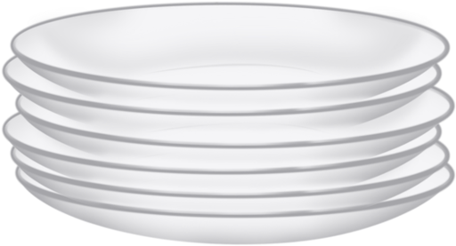
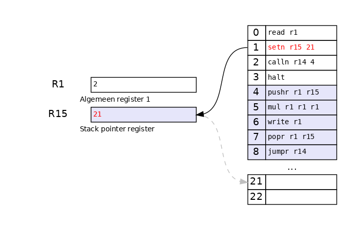

Functies in Hmmm
Inhoud
Functies in Hmmm¶
Hoe functioneert Python?
Schrijven naar geheugen¶
storer rX rY
Sla de waarde van register rX op in het geheugenadres dat is opgeslagen in register rY

Bewaar in register r15 het geheugenadres waar naar toe moet worden geschreven.

Schrijf de waarde in register r3 naar het geheugenadres dat is bewaard in register r15.
Lezen van geheugen¶
loadr rX rY
Laad register rX met de gegevens uit het geheugenadres dat opgeslagen is in register rY

Bewaar in register r15 het geheugenadres waar van moet worden gelezen.

Bewaar de waarde van het geheugenadres dat is opgeslagen in r15 naar register r3.
Functies in Python¶
def main():
x = int(input())
y = fun(x)
print(y)
def fun(x):
y = x * (x - 1)
return y
Na de aanroep van main(), wat wordt op scherm geprint als de input 7 is?
x = input()
y = fun(x)
print(y)
0 read r1
1 calln r14 4
2 write r13
3 halt
calln rX N
Schrijf het eerstvolgende adres naar
rXen spring vervolgens naar adresN
r14 heeft nu de waarde 2, het eerstvolgende regelnummer na calln. Maar wat is de waarde van r13? Het resultaat van de functie!
def fun(x):
y = x * (x - 1)
return y
4 copy r13 r1 # z = x (functie parameter x)
5 addn r1 -1 # x = x - 1
6 mul r13 r13 r1 # z = z * x
7 jumpr r14 # verder naar regel bewaard in r14
Conventies¶
r1input(s)worden gezet inr1,r2, …r13De returnwaarde (resultaat) wordt gezet in
r13r14Het returnadres wordt gezet in
r14

calln zet het returnadres (het eerstvolgende adres na calln) op 2 in r14 en vervolgens wordt de instructie op regel 4 uitgevoerd.


Om (x - 1) uit te voeren wordt 1 afgetrokken van de waarde in r1. De oorspronkelijke input wordt hier gewijzigd!


Een probleem…¶
De functie heeft de oorspronkelijke toestand (de input, of staat) gewijzigd!
def main():
x = int(input()) # r1
y = fun(x) # r13
print(y)
Dit was de aanroep die we hebben gebruikt. Bedenk dat de input x is gewijzigd door de functie, we hebben nu een probleem als we de oorspronkelijke input hadden willen gebruiken, bijvoorbeeld
def main():
x = int(input()) # r1
y = fun(x) # r13
print(x + y)
Dit zal 48 printen (6 + 42) in plaats van 49 (7 + 42) omdat de oorspronkelijke waarde van r1 door de functie is gewijzigd. Maar ook als we de functie een tweede keer zouden aanroepen zal het resultaat niet zijn wat we verwachten

Een oplossing?¶
Meer registers gebruiken … ?
We hebben maar 16 registers!
Programma’s hebben véél functies …
Waarom functies?¶
Een functie is een niet meer dan een blok van handelingen.
Quiz¶
Bereken n * (n - 1) zonder functie
0 read r1
1 jumpn 4
2 write r13
3 halt
4 ...
5 ...
6 ...
7 ...
Oplossing¶
0 read r1
1 jumpn 4
2 write r13
3 halt
4 copy r13 r1
5 addn r13 -1
6 mul r13 r1 r13
7 jumpn 2
Dit programma doet hetzelfde als de functie (calln), maar het returnadres is hier “hard” op jumpn 2 gezet.
Over functies¶
Functies roepen functies aan
def fac(n):
print("factorial called with", n)
if n == 0: # base case
return 1
else: # recursive case
smaller = fac(n - 1)
result = n * smaller
return result
Faculteit, \(5!\) is gelijk aan \(5 \cdot 4 \cdot 3 \cdot 2 \cdot 1\)
fac(5)
factorial called with 5
factorial called with 4
factorial called with 3
factorial called with 2
factorial called with 1
factorial called with 0
120
De ideale situatie¶
Er is maar één set aan registers, maar we willen véél functies kunnen aanroepen
We willen dat elke functie heeft een eigen set van registers heeft!

Als de CPU maar beperkt geheugen (registers) heeft dan gebruiken we RAM als meer ruimte nodig is.
De stack¶

Maak gebruik van het geheugen (de stack) zodat het lijkt dat elke functie eigen registers heeft!
Doel¶
Bewaar belangrijke data in de stack (
r1,r14, etc.)callnen laat de functie alles overschrijvenHerstel belangrijke data uit de stack
jumprterug naar return
Push en pop¶
pushr rX rYZet de inhoud van register
rXop de stack waarnaar verwezen wordt door registerrY
popr rX rYLaad de inhoud van register
rXvan de stack waarnaar verwezen wordt door registerrY
r15De “stack pointer” wordt gezet in
r15
Voorbeeld¶
def main():
x = int(input())
mult(x)
def mult(x):
print(x * x)



Na de pushr operatie is de stack pointer verhoogd om naar het volgende adres in de stack te wijzen.

De oorspronkelijke input is hersteld en de stack pointer is weer verlaagd.
De boodschap¶
Met calln, jumpr, pushr en popr kunnen we elke functie (in Python of een andere taal) in assembly implementeren.
Voorbeeld functie fac¶
Recursieve functies
def main():
x = int(input())
y = fac(x)
print(y)
def fac(n):
if n == 0: # base case
return 1
else: # recursive case
smaller = fac(n - 1)
result = n * smaller
return result
High level talen als Python genereren vaak veel assembly instructies!
Main¶
x = int(input())
y = fac(x)
print(y)
# main
00 read r1 # Lees gebruikersinvoer in in r1
01 setn r15 42 # Initialiseer de stack pointer
02 nop # Ruimte voor uitbreiding
03 calln r14 7 # Roep de faculteitsfunctie aan (op regel 7)
04 nop # Ruimte voor uitbreiding
05 write r13 # Druk uitvoer af op het scherm
06 halt # Klaar!
Base case¶
if n == 0: # base case
return 1
07 jnezn r1 11 # de test voor het basisgeval: is de invoer r1 != 0 ?
08 setn r13 1 # Als r1 0 is, dan is het resultaat, r13, 1
09 nop # Ruimte voor uitbreiding (of om iets af te drukken!)
10 jumpr r14 # Geef resultaat r13 terug aan het regelnummer in r14
Recusive case¶
else: # recursive case
smaller = fac(n - 1)
result = n * smaller
return result
11 pushr r1 r15 # Bewaar (push) r1 op de stack (op positie r15)
12 pushr r14 r15 # Bewaar (push) r14 op de stack
13 addn r1 -1 # Bepaal N-1 en zet het in r1
14 nop # Ruimte voor uitbreiding (of om iets af te drukken!)
15 calln r14 7 # Vraag nu de faculteit van N-1 (Wow!)
16 nop # Ruimte voor uitbreiding (of om iets af te drukken!)
17 popr r14 r15 # Verkrijg (pop) r14 van de stack
18 popr r1 r15 # Verkrijg (pop) r1 van de stack
19 mul r13 r1 r13 # Bereken r13 = N * fac(N-1) (Wow!)
20 jumpr r14 # Klaar! Geef r13 terug naar de aanroeper in r14
Blokken herhalen¶
def fac(x):
print("x is", x)
if x == 0:
print("x:", x, " bc: 1")
return 1
else:
print("Next: fac(", x - 1, ")")
smaller = fac(x - 1)
result = x * smaller
print("x:", x, " r:", result)
return result
fac(3)
x is 3
Next: fac( 2 )
x is 2
Next: fac( 1 )
x is 1
Next: fac( 0 )
x is 0
x: 0 bc: 1
x: 1 r: 1
x: 2 r: 2
x: 3 r: 6
6
Een functie is een niet meer dan een blok van berekeningen dat kan worden herhaald!
# Main
00 read r1 # Lees gebruikersinvoer in in r1
01 setn r15 42 # Initialiseer de stack pointer
02 nop # Ruimte voor uitbreiding
03 calln r14 7 # Roep de faculteitsfunctie aan (op regel 7)
04 nop # Ruimte voor uitbreiding
05 write r13 # Druk uitvoer af op het scherm
06 halt # Klaar!
# +++ Faculteitsfunctie +++
# Basisgeval (regels 7-10)
07 jnezn r1 11 # de test voor het basisgeval: is de invoer r1 != 0 ?
08 setn r13 1 # Als r1 0 is, dan is het resultaat, r13, 1
09 nop # Ruimte voor uitbreiding (of om iets af te drukken!)
10 jumpr r14 # Geef het resultaat, r13, terug aan het regelnummer in r14
# Recursief geval (regels 11-20)
11 pushr r1 r15 # Bewaar (push) r1 op de stack (op positie r15)
12 pushr r14 r15 # Bewaar (push) r14 op de stack
13 addn r1 -1 # Bepaal N-1 en zet het in r1
14 nop # Ruimte voor uitbreiding (of om iets af te drukken!)
15 calln r14 7 # Vraag nu de faculteit van N-1 (Wow!)
16 nop # Ruimte voor uitbreiding (of om iets af te drukken!)
17 popr r14 r15 # Verkrijg (pop) r14 van de stack
18 popr r1 r15 # Verkrijg (pop) r1 van de stack
19 mul r13 r1 r13 # Bereken r13 = N * fac(N-1) (Wow!)
20 jumpr r14 # Klaar! Geef r13 terug naar de aanroeper in r14
En verder¶
De macht van recursie!
def power(b, n):
"""Return base b to the power of n
"""
if n == 0:
return 1
else:
return b * power(b, n - 1)
Merk op dat de input van fac erg veel lijkt op de macht (n) in power!